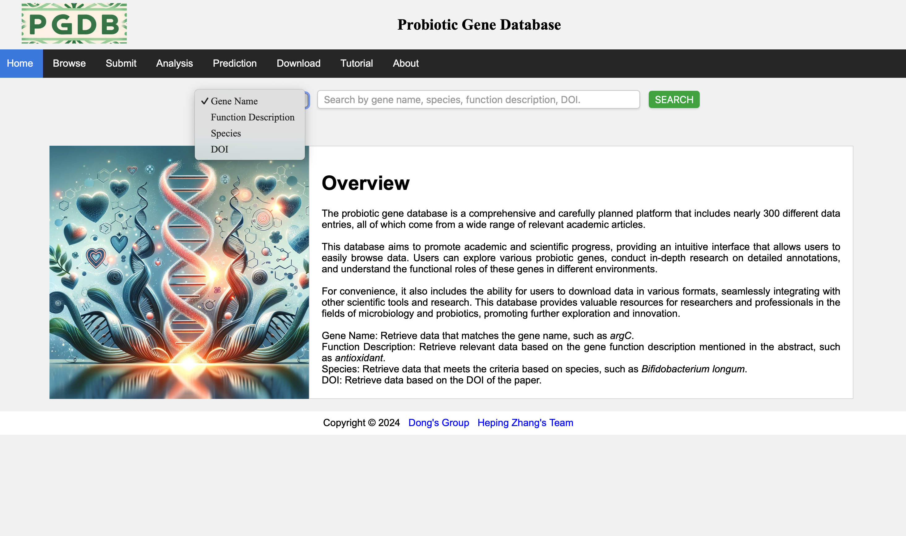
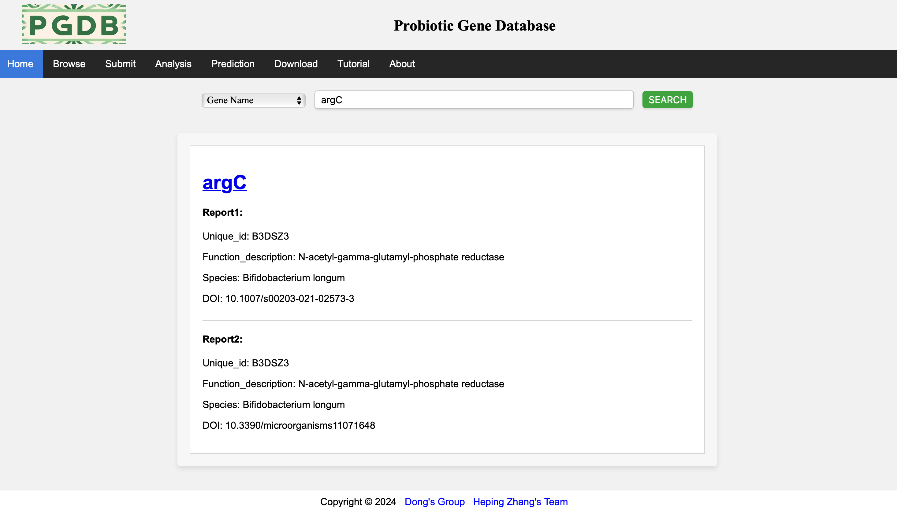
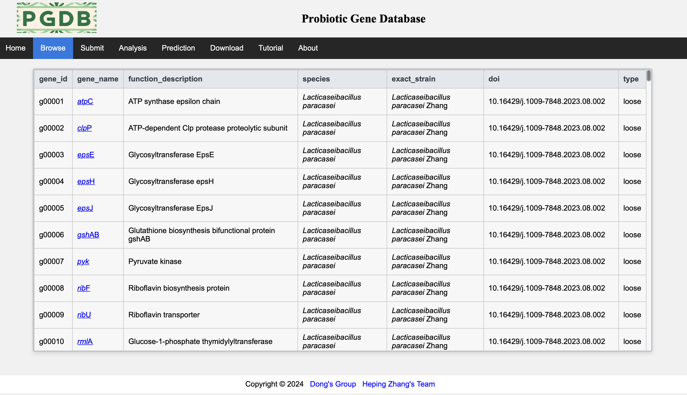
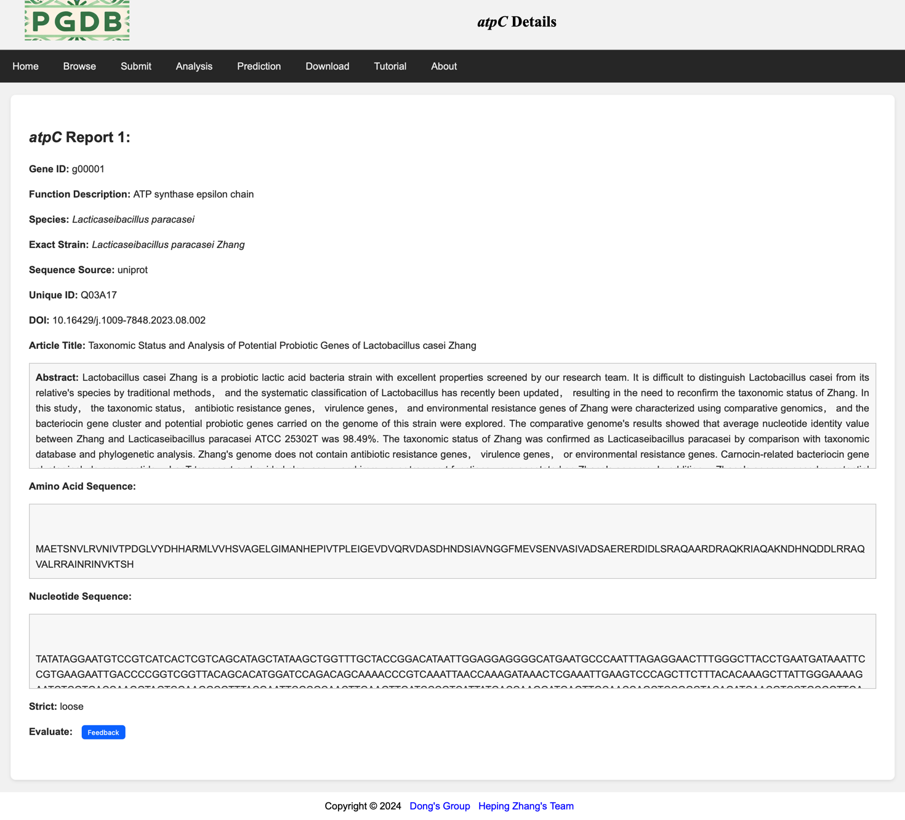
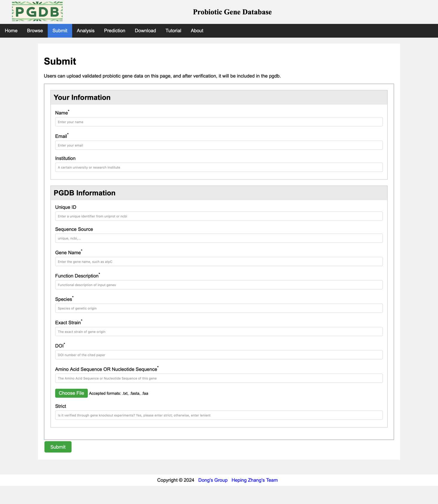
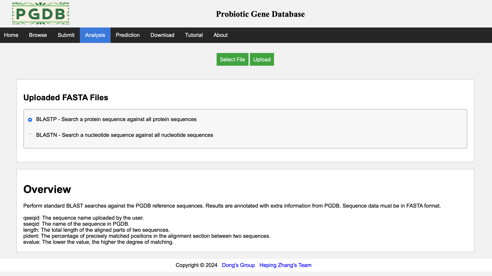
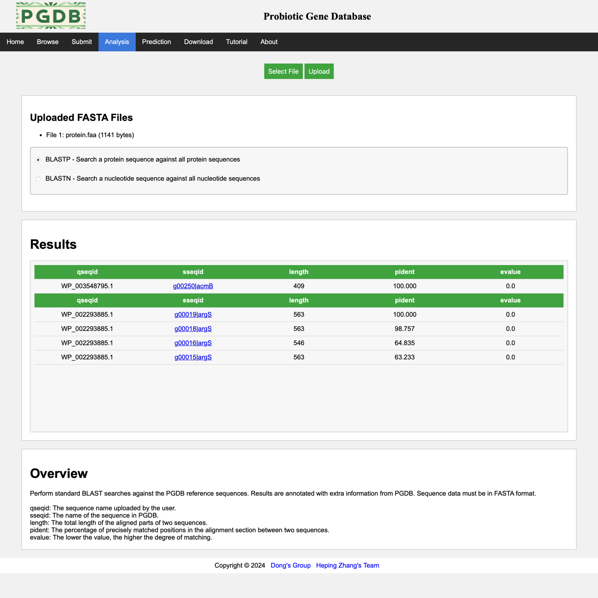
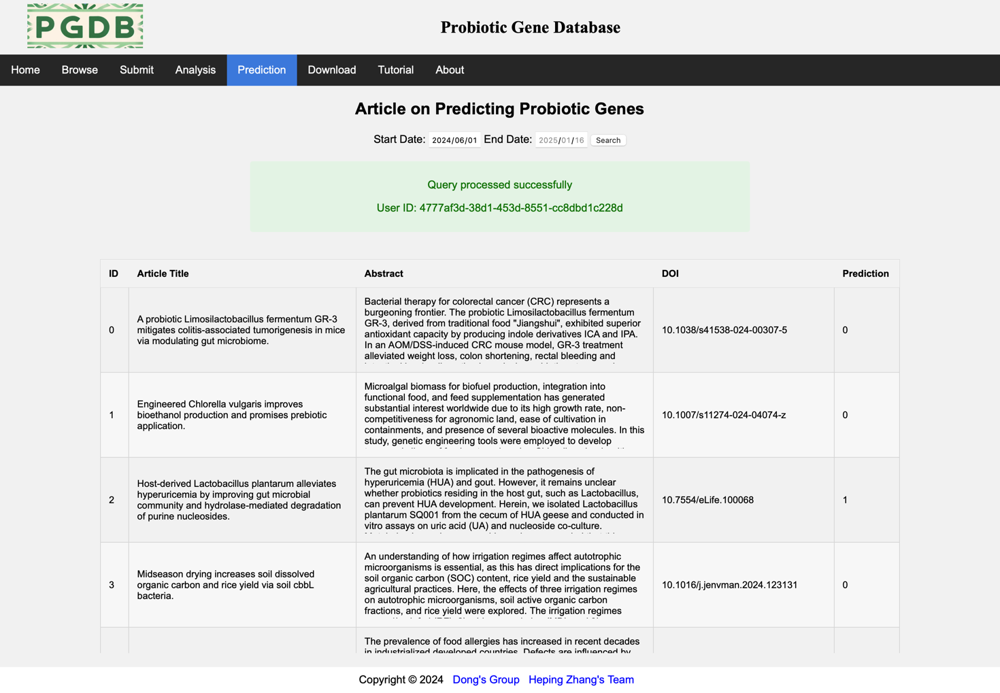
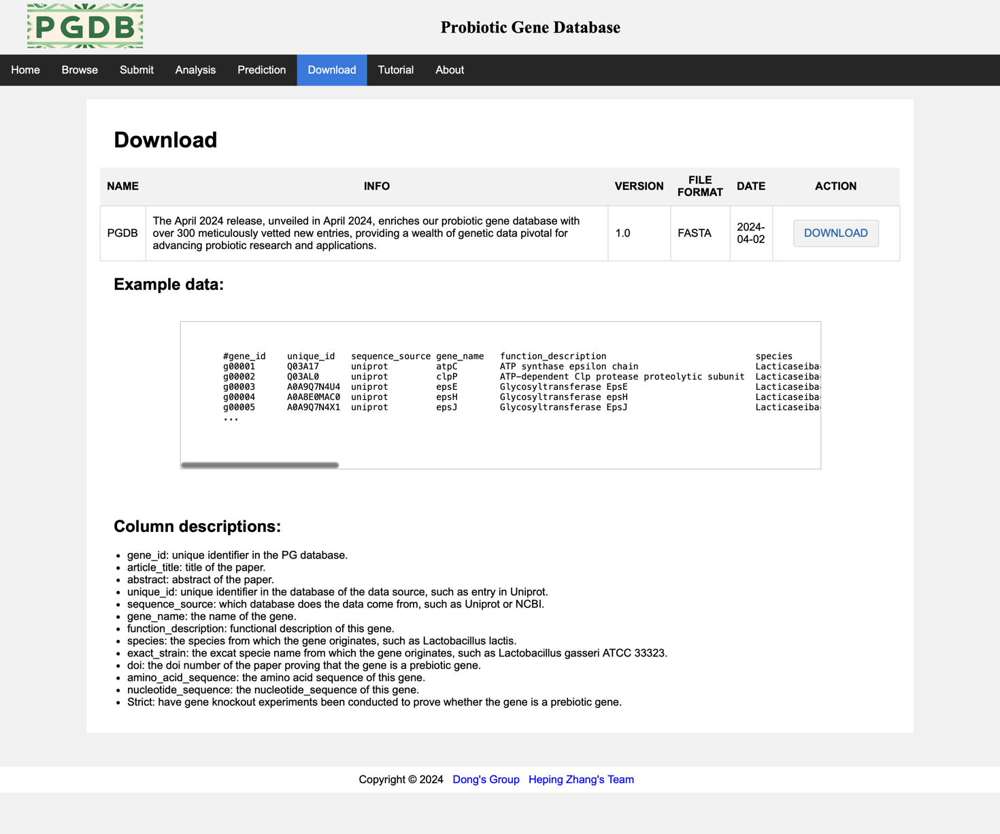

The home page (Figure 1), users can choose to retrieve content based on the drop-down list, search by gene name (e.g. argC), function description (e.g. antagonists), species (e.g. Bifidobacterium longum), DOI.

The system will present the search results based on the search content, and the search results will be classified by gene names (Figure 2).

The Browse page (Figure 3) shows the main fields of all data in the database.

Click on the link on each gene name to view all detailed information about that gene (Figure 4).

Users can upload certified probiotic gene data on this page (Figure 5), with mandatory fields marked with *.

On the analysis page, the blast and blast tools provided by NCBI are embedded, allowing users to choose which tool to use and upload and analyze their own data. (Figure 6).

This page displays an example of the results analyzed using the blast tool. (Figure 7).

This page displays the start and end dates for searching papers by entering them (default is today). The RA-HGATSE model in the system will automatically process papers within this time period and return the predicted results later. (Figure 8).

This page displays the database versions of the past dynasties and provides a link to download the data in this database. (Figure 9).
